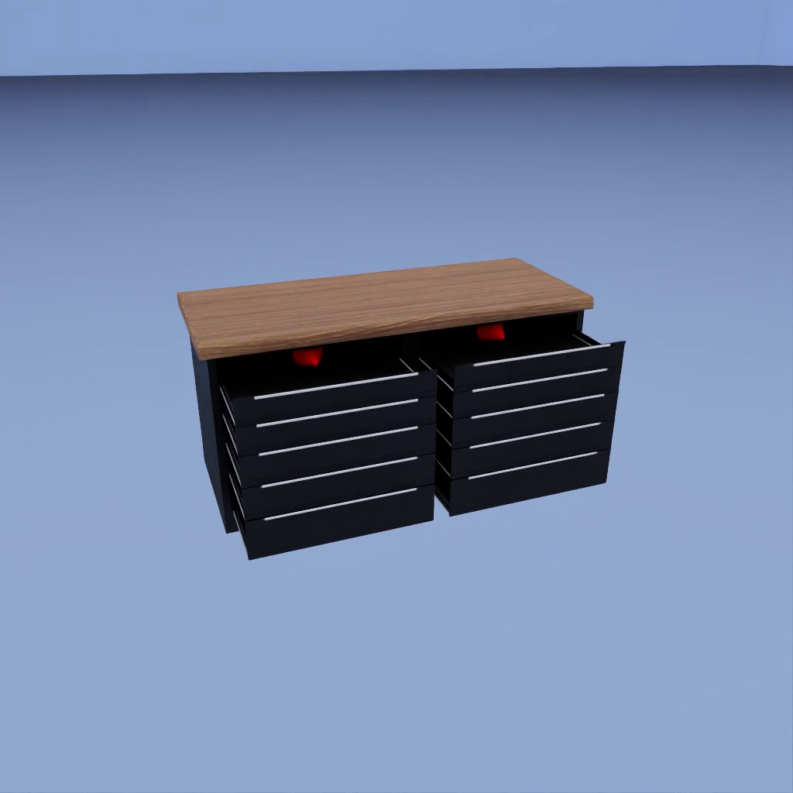

joint_movement (FET004 Multibody)#
Property |
Value |
|---|---|
Test name |
joint_movement |
Feature(s) |
FET004_BASE_PHYSX, FET004_ROBOT_PHYSX |
Engine |
Kit / Isaac Sim (>=2024.2.0) |
Test version |
2.0.0 |
Summary#
Confirms the asset’s joints are discovered and that at least one connected-body pair moves relative to each other when a velocity drive is applied to the joint.
What Pass Guarantees#
A pass certifies that the asset is a genuinely articulated assembly: at least one joint produces real, measurable relative motion between its connected bodies. The test does not require every joint to move; an assembly where one joint articulates correctly passes. Reviewers, PMs, and OEMs can trust that the asset is not a fused or static mesh, that the moving joints are not seized, and that their axes are correctly authored for downstream robot simulation.
What It Checks#
The test first runs pre-checks to confirm movable joints are present. If the asset has no joints or only fixed joints, the test is skipped because there is nothing for a joint-movement test to exercise. When movable joints are found, the test discovers each joint and the resolved paths of its connected child and parent bodies.
For each joint, the test applies a velocity drive on the degree of freedom implied by the joint type and observes whether the child body moves relative to the parent body. A joint passes when it produces a rotation of at least 1.0 degree or a translation of at least 2.0 percent of the child body’s bounding-box diagonal. The overall test passes when at least one joint meets either threshold. If no joint moves on any drive or nudge, the test fails.
How It Works#
The test runs the drive search without frame capture first, then re-runs only the winning configuration with capture, because rendering dominates the cost of this test.
Scene setup. The asset loads into a white room with gravity set to zero and a visual ground plane for context. The asset is seated on the ground so the scene reads naturally, but the floor collider is disabled: with gravity at zero and a kinematic base, nothing rests on the floor, and a live floor collider would silently block a joint driven toward it and misread as motionless.
Joint discovery. Before physics runs, the test scans the asset’s prim hierarchy for movable joints and records each joint’s type, prim path, and the resolved paths of its child and parent bodies. Each joint is classified by the drive degree of freedom that its type implies: a revolute joint drives on its angular degree of freedom and a prismatic joint on its linear one. PhysX applies the drive about the joint’s own authored axis, so the axis letter is needed only for the direction of the displayed arrow. A D6, spherical, or other joint with no single obvious degree of freedom falls back to the velocity nudge.
Base anchor. The test pins the base bodies before simulation by setting them kinematic. A base body is a rigid body that is a joint parent but never a joint child, that is, the immovable trunk the moving parts hang off. A kinematic body absorbs the equal-and-opposite reaction from driving the joints and cannot be pushed, so only the joint degrees of freedom can produce motion. The original kinematic flags are restored after the test.
Open-direction resolution. A joint’s drive target and its lower and upper limits live in the same coordinate, so the open end is the limit farthest from the closed rest near zero. A door limited to a range of zero to 130 degrees opens toward positive 130, a door limited from negative 130 to zero opens toward negative 130, and a drawer limited from negative 0.42 to 0.01 meters opens toward negative 0.42. Driving each joint toward its own open end, rather than one shared direction for the whole assembly, keeps french doors from jamming each other shut at the center seam. Each directed joint’s target speed is scaled to its own travel so that a short-range door and a long-throw drawer both open within the clip, never slower than the configured baseline. A joint whose limits are missing, infinite, or symmetric has no unambiguous open end and falls back to the positive-then-negative search.
Drive search (no capture). The directed joints are driven toward their open limits simultaneously, each at the travel-scaled speed resolved above. Joints with no usable limits are probed at the baseline speed (45.0 degrees per second for angular degrees of freedom, 0.05 meters per second for linear ones), first in the positive direction, then the still-idle ones in the negative direction. The drive effort, expressed as damping, is ramped from a low floor to a high cap across the run so that stiff or heavy joints break free while light parts are not flung at the start. A high force cap lets the velocity drive deliver the torque it computes, because these joints author no drive and would otherwise inherit the default PhysX force cap, which is enough to slide a light part but not to open a heavy door against a stiff hinge. A JointTracker samples each joint’s child-body pose in the parent’s local frame every frame and records the maximum rotation and translation seen.
Record pass (capture). Every joint that moved is re-driven toward its open direction with frame capture at 15 frames per second and motion arrows, to produce the review video. This pass starts the damping ramp high, because the joints have already proven they move, so the part swings or slides clearly from the first frame of the video.
Velocity-nudge fallback. If the drive moved nothing, the test falls back to setting the rigid-body linear velocity of each still-idle joint’s child body directly, sweeping six cardinal directions (positive and negative X, Y, and Z) at 0.1 meters per second. The same search-then-record structure applies.
Final fallback. If neither the drive search nor the nudge sweep produces movement, the test poses one still frame per attempted degree of freedom and direction, with its arrow, and stitches them into a low-frame-rate overview video at 0.5 frames per second. No physics is simulated for this fallback. The video lets a reviewer inspect every configuration that was attempted.
Movement measurement. The JointTracker measures rotation as the angle between the initial and current relative quaternions of the child body in the parent body’s local frame, and translation as the Euclidean distance between the initial and current relative translation. Translation is then expressed as a percentage of the child body’s bounding-box diagonal. This relative-frame measurement ensures that any global drift of the whole assembly does not count as joint motion.
Failure Cases#
Symptom |
Likely cause |
|---|---|
Test fails: 0 joints responded; drive degrees of freedom tried in both directions |
Joints are seized or have misconfigured limits that prevent any motion. |
Test fails: only angular degrees of freedom tried, no linear |
Prismatic joints are absent so linear drives were not tried; revolute or spherical joints exist but are locked. |
Test fails: velocity nudge attempted but still no movement |
Joint limits clamp the allowed range to zero, or the connected bodies overlap and are constrained to zero range. |
Test is skipped: no joints found |
The asset has no joints in its prim hierarchy, or the joints have no child bodies. |
Test is skipped: all joints are FixedJoint |
Every joint is a fixed joint, which is intentionally rigid and not a defect. |
How to Fix#
When the test fails because no joints responded, check the following in the asset.
Verify that lower and upper limits allow a range of motion. A joint whose lower limit equals its upper limit is locked and cannot move.
Confirm that drive attributes (stiffness, damping, and target velocity) are authored consistently. A stiffness of zero is correct for velocity mode. The test enforces a minimum damping of 10.0 during its simulation run, so zero-authored damping does not prevent movement on its own. Extremely high stiffness values can resist the velocity drive and should be reduced or set to zero.
Check that the joint axis attribute points in the intended direction. A mismatch between the axis and the geometry can produce motion that is too small to measure, especially for revolute joints near their center of rotation.
Confirm that the child body is connected to the joint and has a RigidBodyAPI applied. A body without RigidBodyAPI is treated as kinematic and does not respond to drive forces.
Verify the joint type matches the intended degrees of freedom. A PhysicsRevoluteJoint should be used for rotation, and a PhysicsPrismaticJoint for translation. A spherical joint with no angular limits is also acceptable.
Expected Result#

The joints that move are driven toward their open direction. The two bodies connected by each moving joint visibly move relative to each other in the joint’s allowed direction: rotating around the axis for a revolute joint or sliding for a prismatic joint. A motion arrow anchored on each moving part points the direction that part is actually traveling. A joint that produces no visible relative motion fails the check.
Notes and Caveats#
Gravity is disabled. Physics runs with gravity set to zero throughout the test. This prevents joints from sagging under load and ensures that any detected displacement is caused by the applied drive rather than gravitational settling.
The base body is anchored kinematic. The asset’s base bodies, those that are a joint parent but never a joint child, are made kinematic before simulation begins. A kinematic body cannot be pushed, so it absorbs the reaction force from driving the joints and the whole assembly cannot drift. Only joint degrees of freedom can produce motion, so any displacement detected by the JointTracker is genuine articulation. The original kinematic flags are restored after the test.
The floor collider is disabled. The ground plane stays visible for context, but its collision is turned off. With gravity at zero and a kinematic base, nothing rests on the floor, so a live floor collider would only block a joint driven toward it and read as a false failure.
Relative-frame measurement. The JointTracker measures the child body’s pose in the parent body’s local frame, not in world space. Global drift or camera movement does not count as joint motion.
One passing joint is sufficient. The test passes when at least one joint crosses the threshold on any drive or nudge direction. Joints that do not move are recorded in per-joint metrics but do not cause the overall test to fail.
Travel is reported but not gated. Each joint records the fraction of its authored travel that it actually reached. This number is informational: a stiff but functional joint that opens only part way still passes, because the pass criterion is movement past the threshold, not reaching the full range.
Fixed joints are excluded. Joints of type PhysicsFixedJoint are excluded from discovery and do not appear in the metrics. An asset where all joints are fixed is skipped rather than failed.
Motion arrows. When the test produces a video, one arrow per moving joint is anchored at the part’s bounding-box center, its visual middle, and points along the displacement from the part’s pre-play position. The direction is derived from the observed motion, so it is correct regardless of joint type, axis orientation, or drive sign. A part that has not yet moved draws no arrow. In the still-frame fallback video, one arrow is drawn per attempted degree of freedom or nudge direction so a reviewer can inspect which configuration was tried.
Interactive instrumentation. The test emits a structured
joint_movement_result event on the engine event channel with a full per-joint
summary, totals, the winning drive direction, the attempted degrees of freedom,
and the recorded video name, so an interactive Isaac Sim run reports everything in
one place.